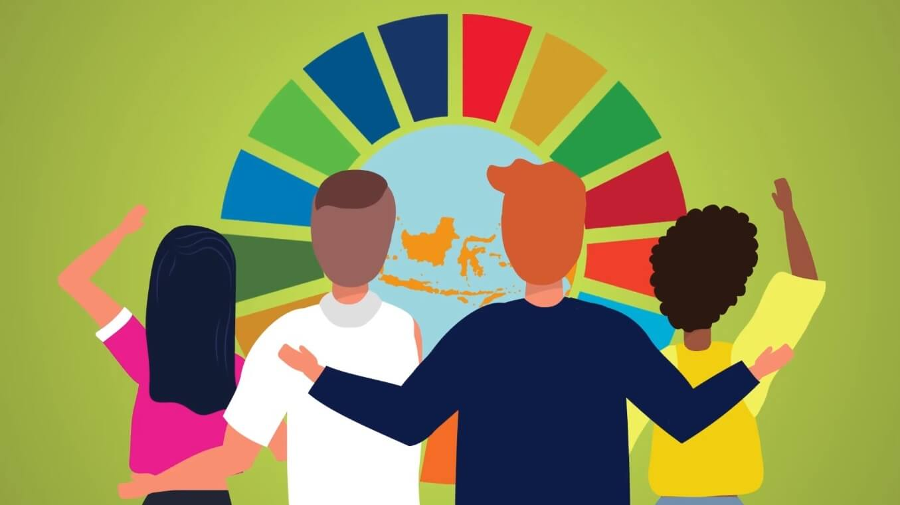
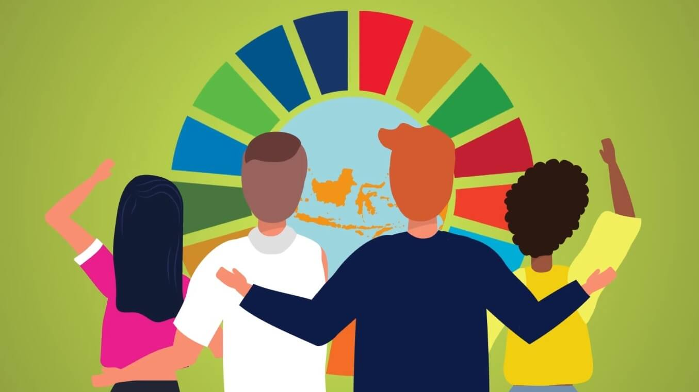
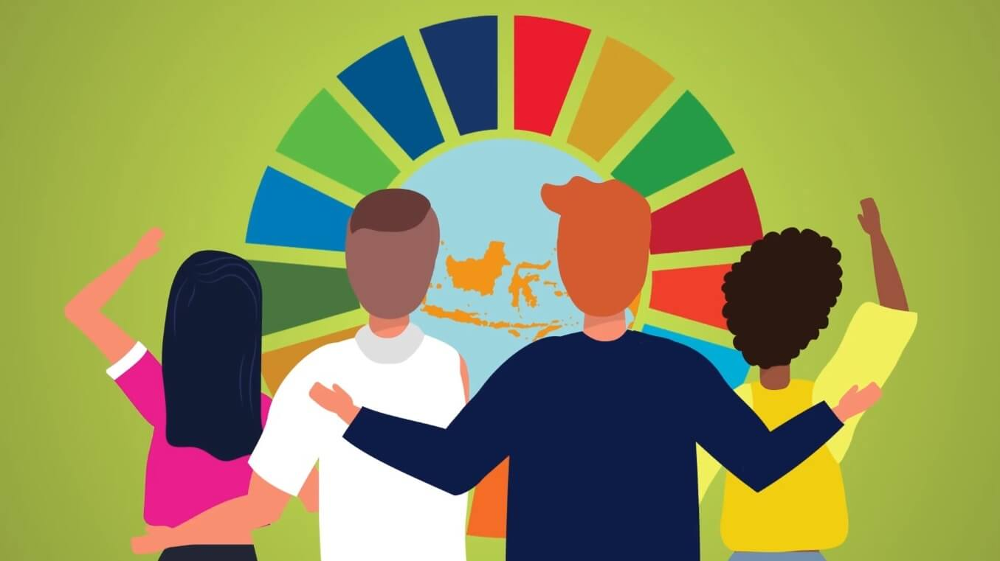

Hubungan antara Pancasila dan Tujuan Pembangunan Berkelanjutan (SDGs) terletak pada inti nilai-nilai keduanya yang berfokus pada keadilan, kesejahteraan, dan keberlanjutan hidup manusia. Pancasila sebagai dasar negara Indonesia memberikan panduan moral dan etika yang sejalan dengan prinsip-prinsip SDGs, yang mencakup pemberantasan kemiskinan, penghapusan ketidakadilan, serta pelestarian lingkungan. Sebagai contoh, SDGs Tujuan 5 tentang kesetaraan gender menghubungkan nilai kemanusiaan dalam Pancasila dengan langkah nyata untuk menghapus diskriminasi, kekerasan, dan ketimpangan gender. Hal ini sejalan dengan kewajiban negara untuk melindungi dan memajukan hak-hak semua warganya tanpa memandang perbedaan.
Nilai ini mengajarkan bahwa setiap manusia diciptakan oleh Tuhan dengan derajat yang sama. Kesetaraan gender mencerminkan penghormatan terhadap martabat manusia, baik laki-laki maupun perempuan, sebagai makhluk ciptaan Tuhan yang memiliki hak dan tanggung jawab yang setara.
Sila ini mendorong perlakuan adil terhadap semua manusia, tanpa memandang gender. Diskriminasi terhadap perempuan, seperti kesenjangan dalam upah atau kesempatan pendidikan, bertentangan dengan prinsip ini. Mewujudkan kesetaraan gender berarti menegakkan keadilan dan memperlakukan semua orang dengan beradab.
Kesetaraan gender berkontribusi pada persatuan karena negara membutuhkan kontribusi dari semua warganya, tanpa membedakan jenis kelamin. Ketika perempuan memiliki hak yang sama untuk berkontribusi dalam pembangunan, mereka memperkuat persatuan dan harmoni sosial.
Sila ini mengedepankan keterlibatan semua pihak dalam proses pengambilan keputusan. Kesetaraan gender sejalan dengan nilai ini karena memastikan perempuan memiliki hak yang sama untuk berpartisipasi dalam musyawarah, baik di tingkat keluarga, masyarakat, maupun pemerintahan.
Keadilan sosial mencakup memberikan hak yang sama kepada perempuan untuk mengakses pendidikan, pekerjaan, dan layanan kesehatan. Ketika perempuan diperlakukan dengan adil, mereka dapat berkontribusi secara optimal dalam pembangunan, yang merupakan inti dari sila ini.